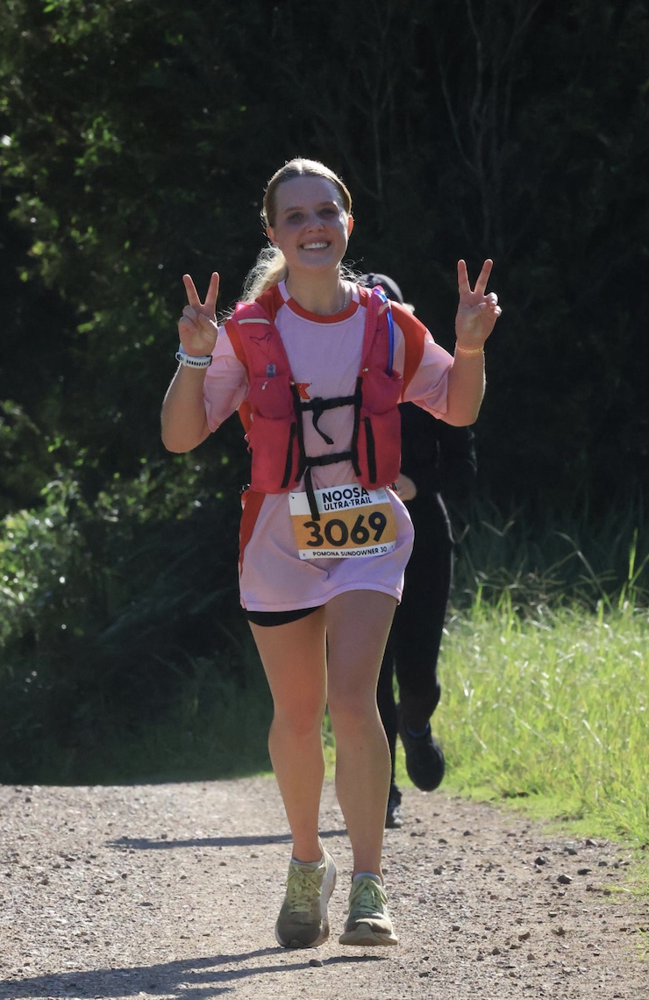

About Me
Hi! I'm Charlisse Newcombe, an aspiring web developer based on the beautiful Gold Coast, Australia. I began my journey into web development after graduating high school class of 2024, driven by a long-standing interest in coding and technology.
Outside of computers, you'll often find me running along the coastline or through the bush as it's my favourite way to reconnect with nature and clear my mind after a day spent online. I love the outdoors and keep myself busy by having many active hobbies such as soccer, tennis and triathlons.
I'm always eager to take on new projects, collaborate with others, and continue to grow to be the best version of myself.